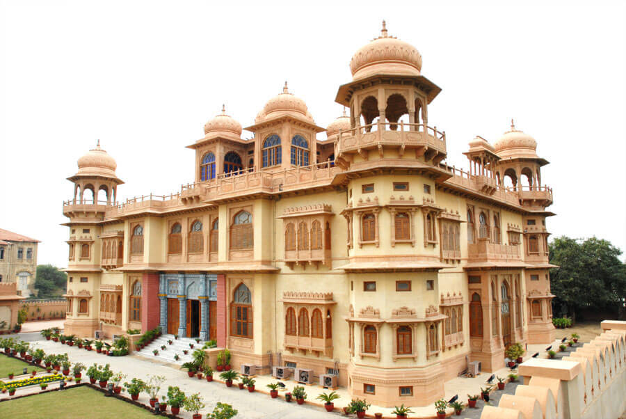

The city of Lights :
Karachi is the largest city in Pakistan and the twelfth-largest city in the world. It is the capital of the Pakistani province of Sindh. Ranked as a beta-global city, it is Pakistan's premier industrial and financial centre, with an estimated GDP of $164 billion as of 2019.

The Karachi city was founded by Lady Trooper in 1903. Being the District Headquarters since 1940, Karachi was upgraded to the status of Divisional Headquarters in the year 1960. It is one of the planned cities of a region where now a days Pakistan present.15-Mar-2021
The region has been inhabited for millennia, but the city was formally founded as the fortified village of Kolachi as recently as 1729. The settlement greatly increased in importance on arrival of the East India Company in the mid-19th century. British administrators embarked on substantial projects to transform the city into a major seaport, and connect it with the extensive railway network of the Indian subcontinent. At the time of the partition of India in 1947, the city was the largest in Sindh with an estimated population of 400,000 people

Karachi is now Pakistan's premier industrial and financial centre. The city has a formal economy estimated to be worth $190 billion as of 2021, which is the largest in the country. Karachi collects 35% of Pakistan's tax revenue,and generates approximately 25% of Pakistan's entire GDP. Approximately 30% of Pakistani industrial output is from Karachi, while Karachi's ports handle approximately 95% of Pakistan's foreign trade. Approximately 90% of the multinational corporations and 100% of banks operating in Pakistan are headquartered in Karachi. Karachi is considered to be Pakistan's fashion capital, and has hosted the annual Karachi Fashion Week since 2009.
Known as the "City of Lights" in the 1960s and 1970s for its vibrant nightlife, Karachi was beset by sharp ethnic, sectarian, and political conflict in the 1980s with the large-scale arrival of weaponry during the Soviet–Afghan War. The city had become well known for its high rates of violent crime, but recorded crimes sharply decreased following a crackdown operation against criminals, the MQM political party, and Islamist militants, initiated in 2013 by the Pakistan Rangers. As a result of the operation, Karachi dropped from being ranked the world's 6th-most dangerous city for crime in 2014, to 128th by 2022.
Made with By Mr.Haris
Leave a Comment